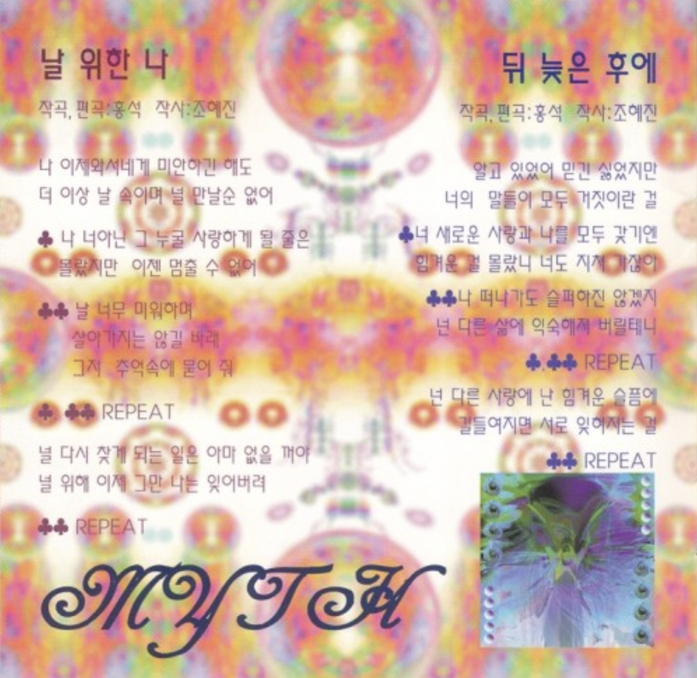
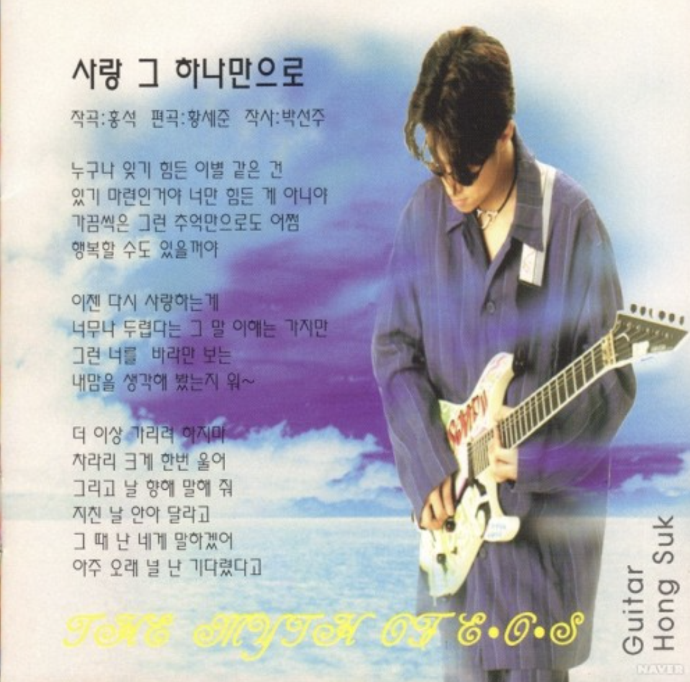
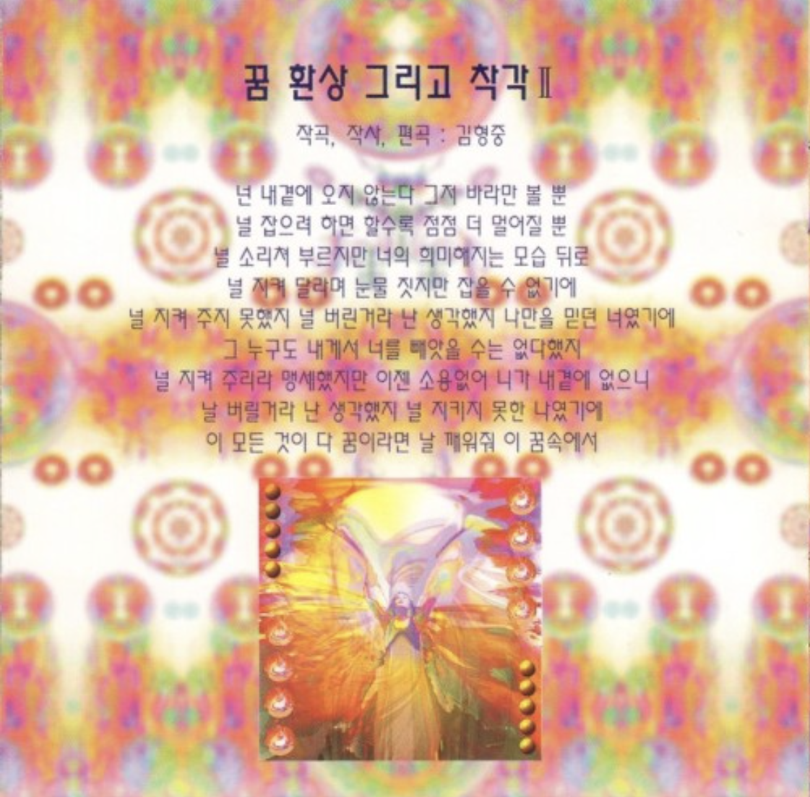
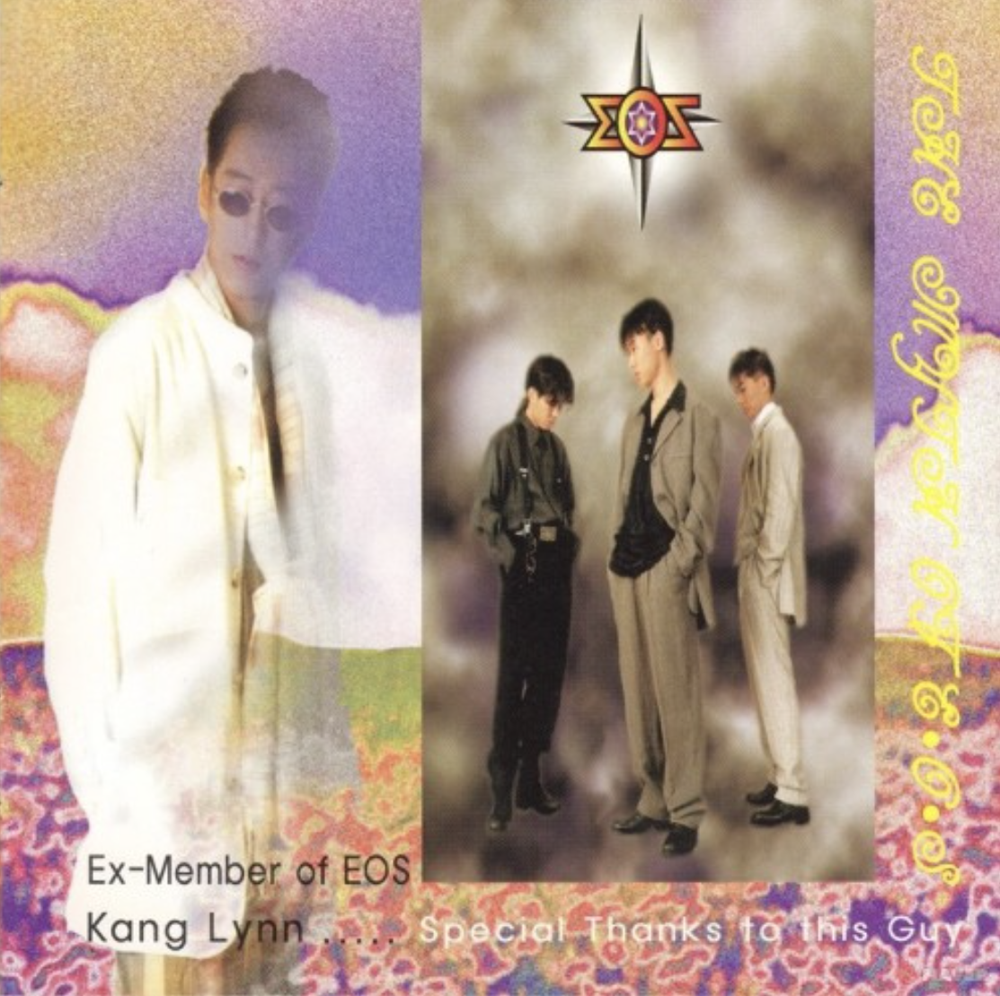
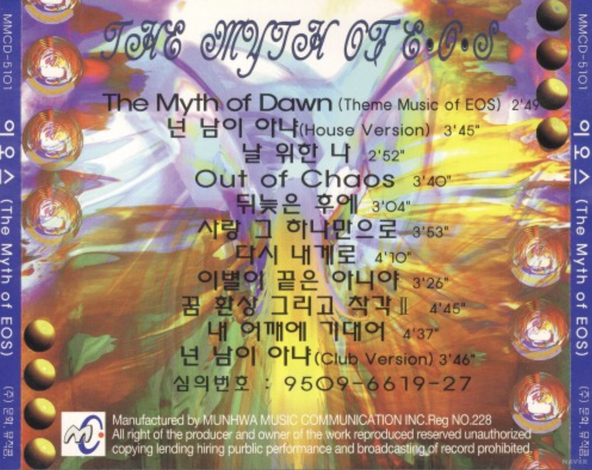

2집 The Myth of E.O.S 넌 남이 아냐
<1996>
가수 소개
이오스(E.O.S)는 1993년 김광수 프로듀서에 의해 기획되어 데뷔한 3인조 그룹으로, 테크노를 지향하던 팀은 아니었으나 기획사의 의도에 따라 기타, 신디사이저, 보컬 조합으로 구성되었으며, 당시 생소했던 악기를 도입하고 신해철 등의 지원을 받으며 한국형 테크노 팝의 초기 형태를 실험했던 그룹입니다.
앨범소개
1995년 발매된 이오스(E.O.S)의 정규 2집 「The Myth of E.O.S」는 '라이브가 가능한 테크노 음악'을 지향하며 김형중의 음악적 역량이 돋보였던 앨범으로, 대표곡 <넌 남이 아냐>의 큰 인기와 더불어 당시 파격적인 비주얼로 화제를 모았으나, 이후 표절 시비에 휘말리는 등 명암을 함께 남기며 훗날 3집을 끝으로 해체하게 된 기념비적 작품입니다.
🎵




